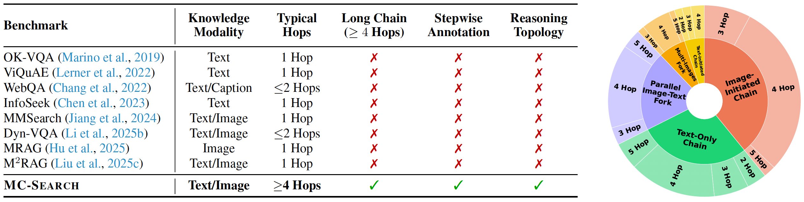
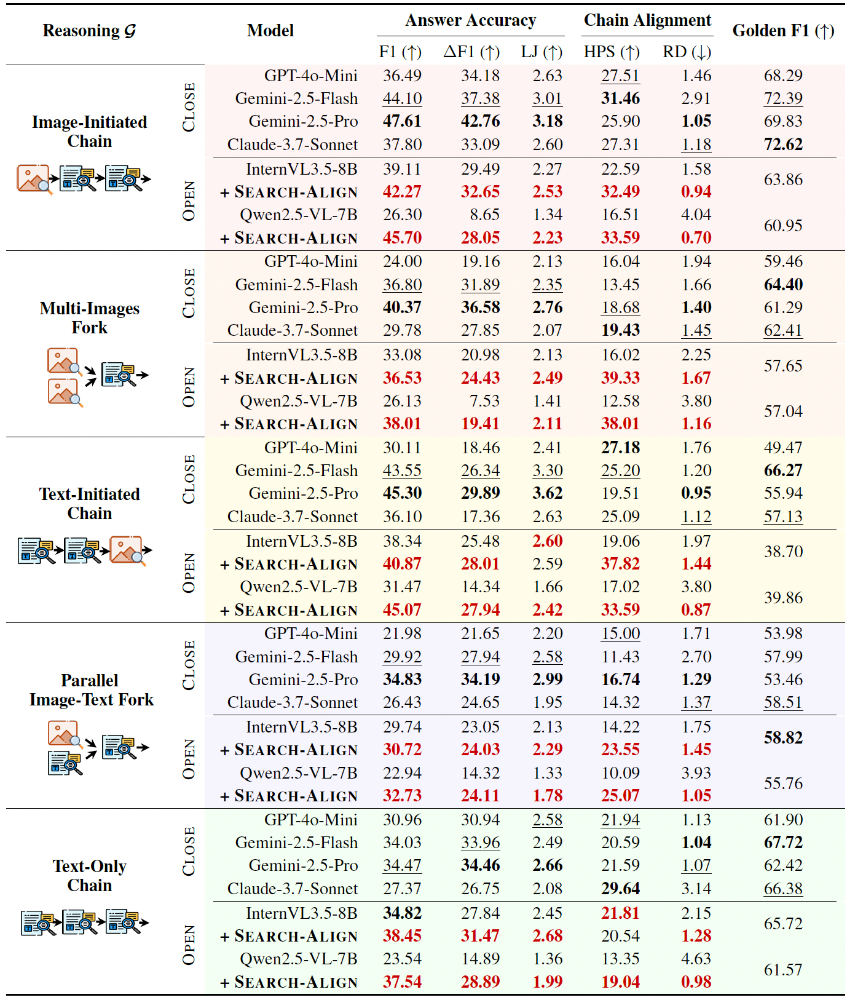
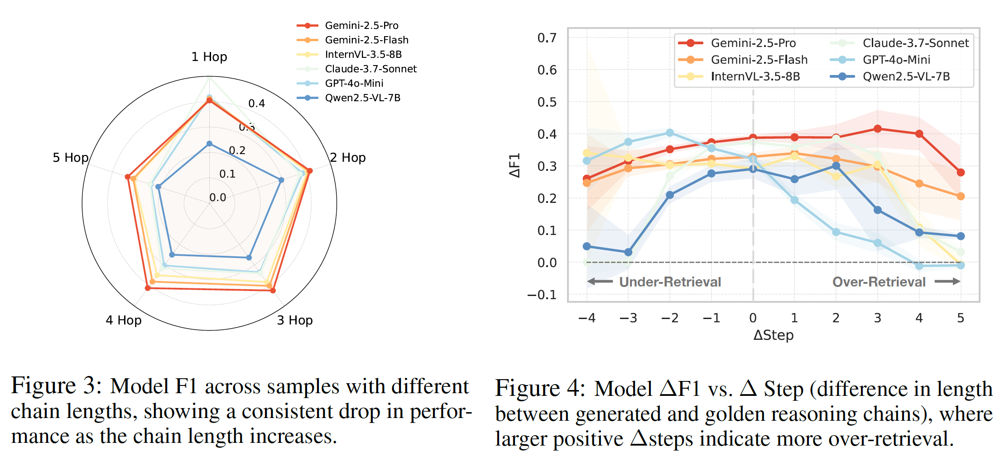
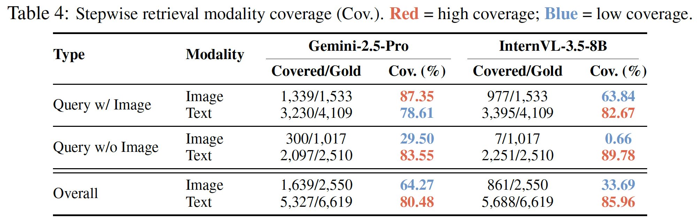
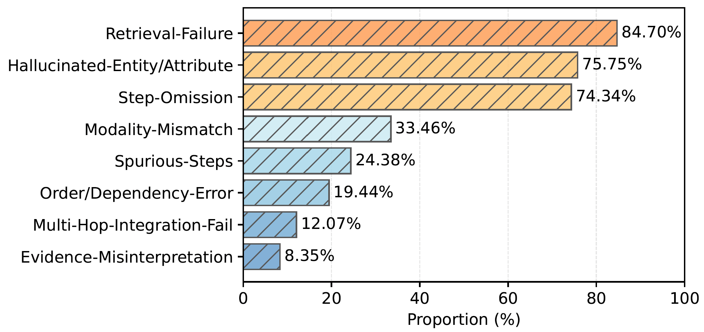

With the increasing demand for step-wise, cross-modal, and knowledge-grounded reasoning, multimodal large language models (MLLMs) are evolving beyond the traditional fixed retrieve-then-generate paradigm toward more sophisticated agentic multimodal retrieval-augmented generation (MM-RAG). Existing benchmarks, however, mainly focus on simplified QA with short retrieval chains, leaving adaptive planning and multimodal reasoning underexplored. We present MC-Search, the first benchmark for agentic MM-RAG with long, step-wise annotated reasoning chains spanning five representative reasoning structures. Each example specifies sub-questions, retrieval modalities, supporting facts, and intermediate answers, with fidelity ensured by HAVE (Hop-wise Attribution and Verification of Evidence), resulting in 3,333 high-quality examples averaging 3.7 hops. Beyond answer accuracy, MC-Search introduces new process-level metrics for reasoning quality, stepwise retrieval and planning accuracy. By developing a unified agentic MM-RAG pipeline, we benchmark six leading MLLMs and reveal systematic issues such as over- and under-retrieval and modality-misaligned planning. Finally, we introduce Search-Align, a process-supervised fine-tuning framework leveraging verified reasoning chains, showing that our data not only enables faithful evaluation but also improves planning and retrieval fidelity in open-source MLLMs.
We introduce MC-Search as a new benchmark paradigm for multimodal agentic search, requiring agents to reason over both visual and textual evidence through structured, multi-hop chains.
| • Scale & Quality | 3,333 examples averaging 3.7 hops, verified by HAVE (Hop-wise Attribution and Verification of Evidence). |
| • Offline Knowledge Base | 389K images and 784K documents covering diverse real-world topics. |
| • Diverse Reasoning Structures | Five representative search-enhanced reasoning structures: image-initiated chain, text-initiated chain, parallel image-text fork, multi-images fork, and text-only chain. |
| • Step-wise Annotation | Each example specifies sub-questions, retrieval modalities, supporting facts, and intermediate answers at every hop. |

Comparison of existing multimodal retrieval-augmented QA datasets. Distribution of the five reasoning topologies in MC-Search.
MC-Search evaluates models beyond final-answer accuracy (F1, LLM-as-Judge) using process-level metrics:
| • Hit-per-Step (HPS) | Measures whether each reasoning step retrieves the correct supporting evidence. |
| • Rollout Deviation (RD) | Quantifies how much the predicted reasoning chain deviates from the gold trajectory. |
| • Planning Accuracy | Evaluates how well agents decompose complex questions into sub-questions. |
Closed-source models (e.g., Gemini-2.5-Pro) achieve the strongest overall performance. Open-source models lag mainly due to weaker planning and retrieval alignment. Process-level training with Search-Align significantly closes this gap:
| • Closed-source lead | Gemini-2.5-Pro tops all metrics; GPT-4o follows closely on process-level scores. |
| • Open-source gap | Primarily driven by poor planning decomposition and modality-misaligned retrieval. |
| • Search-Align gains | Structured reasoning supervision consistently improves open-source MLLMs across all process-level metrics. |

Performance degrades systematically with longer chains and misaligned retrieval budgets:
| • Chain length | Sharp accuracy drops beyond 4–5 hops; models fail to maintain stable planning over long trajectories. |
| • Under-retrieval | Causes the largest degradation — critical evidence is skipped entirely. |
| • Over-retrieval | Moderate excess can recover missing evidence; excessive retrieval introduces noise and hurts reasoning quality. |

Models exhibit a strong text-retrieval bias, exposing a significant visual grounding gap:
| • Text bias | High text retrieval coverage across all models; image retrieval coverage is significantly weaker. |
| • Visual grounding | Deteriorates sharply without explicit image cues, revealing a modality gap in current multimodal reasoning. |

Most failures originate from evidence acquisition rather than downstream reasoning:
| • Top failure modes | Retrieval failure, hallucinated entities, and missing reasoning steps dominate error cases. |
| • Structural errors | Less frequent but still challenging for long multi-hop chains — reasoning logic breaks down at later steps. |

Our evaluation of state-of-the-art MLLMs reveals three critical bottlenecks in current multimodal agentic search capabilities. The most prevalent failure pattern involves compounding retrieval errors across reasoning hops — a single wrong retrieval at step 2 propagates and amplifies failure through all subsequent steps. Cross-domain errors (i.e., failures at modality-switching junctions) account for the majority of task failures, confirming that the critical bottleneck emerges precisely at the intersection where visual and textual retrieval must be coordinated.
💡 Compounding Errors:
Retrieval fidelity drops significantly as reasoning depth exceeds 3 hops.
💡 Modality Gap:
Models struggle with maintaining consistency when switching between image and text retrieval.
💡 Process Supervision:
Explicit reasoning alignment (SEARCH-ALIGN) substantially boosts retrieval success rates
across all topologies and model families.
@inproceedings{
ning2026mcsearch,
title={{MC}-Search: Evaluating and Enhancing Multimodal Agentic Search with Structured Long Reasoning Chains},
author={Xuying Ning and Dongqi Fu and Tianxin Wei and Mengting Ai and Jiaru Zou and Ting-Wei Li and Hanghang Tong and Yada Zhu and Hendrik Hamann and Jingrui He},
booktitle={The Fourteenth International Conference on Learning Representations},
year={2026},
url={https://openreview.net/forum?id=JEGDp1E4OH}
}